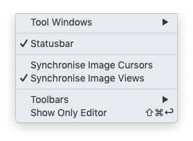
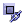

| View Menu | |

This menu item provides a list of available tool windows you can activate.

Here you toggle the visibility of the status bar, which is located in the downmost area of the Sentinel Toolbox main window. The status bar is used to display tool tips, status of background tasks. It shows also information about the current pixel under the cursor. Deselecting the check box here will remove the status bar from the main window (and vice versa).
Synchronizes cursor positions across multiple image windows. The functionality is also available if you click on in the Navigation Window.
Synchronizes views across multiple image windows. The functionality is also available if you click on

in the Navigation Window.
This menu item provides a list of available tool bars you can activate.
This menu item hides everything except the active window.